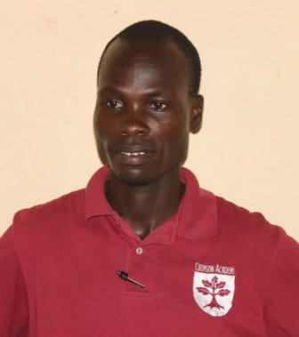
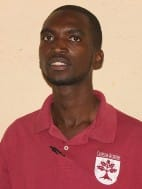
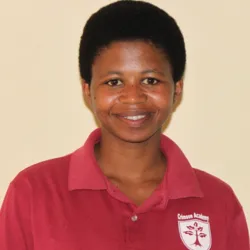

A school built on faith, character, and academic excellence.
Founded in 2011 with four classrooms and 181 students. Today, a full campus serving a village that asked for it first.
Emboldening children to reach beyond impossibilities.
Children carry the hopes of the future. Providing access and opportunity to educate children around the world is our aim and purpose. Crimson Academy will embolden children and communities to reach beyond impossibilities and transform the future for the better.
We are committed to facilitating learning experiences that help our students achieve their greatest potential and adapt to a diverse, ever-changing society.
We stress the total development of each child: spiritual, moral, intellectual, social, emotional, and physical.

Six values, and how they fit together.
Truth, Discipline and Service are practised. Faith, Hope and Love are what grows where they meet.
An environment that mirrors the character of Christ.
Faith is not a subject taught in one period a week — it shapes how teachers speak to children, how discipline is handled, and how the school serves the village around it.
The six values above are drawn directly from scripture, and they are taught and referred to explicitly rather than left implicit. Families of all backgrounds are welcome at Crimson Academy.

From one visit to a full campus.
Crimson Academy did not start with a building. It started with a visit, and with parents in a Rwandan village asking for something their children could not otherwise get.





A team devoted to every child.


Come and see the school for yourself.

We’d love to show you around.
- CampusKagina, Kamonyi District, Southern Province, Rwanda
- Emailinfo@crimsonacademy.org
- LanguagesEnglish · Français · Kinyarwanda